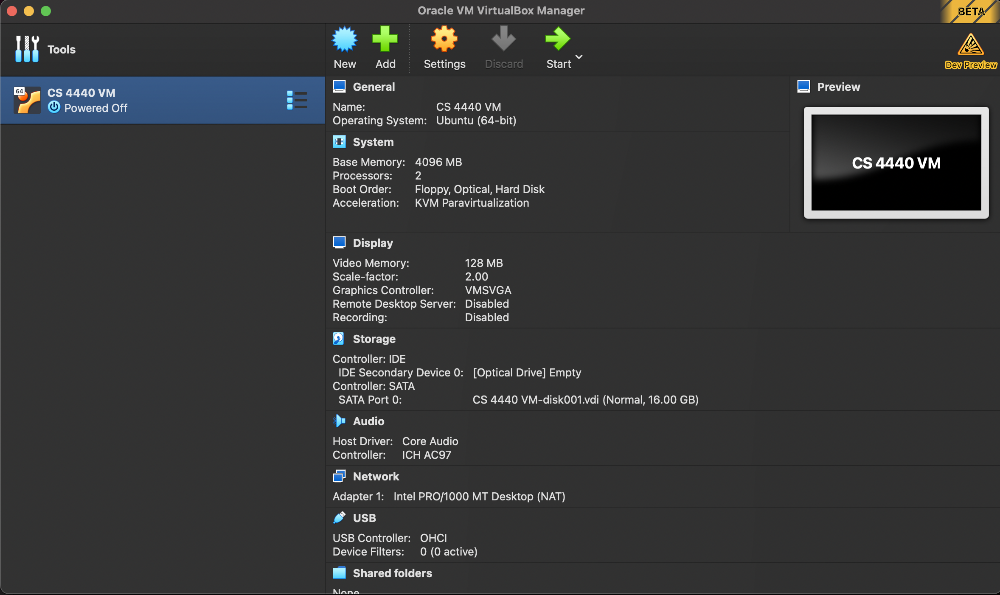
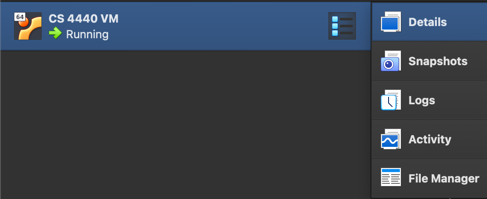
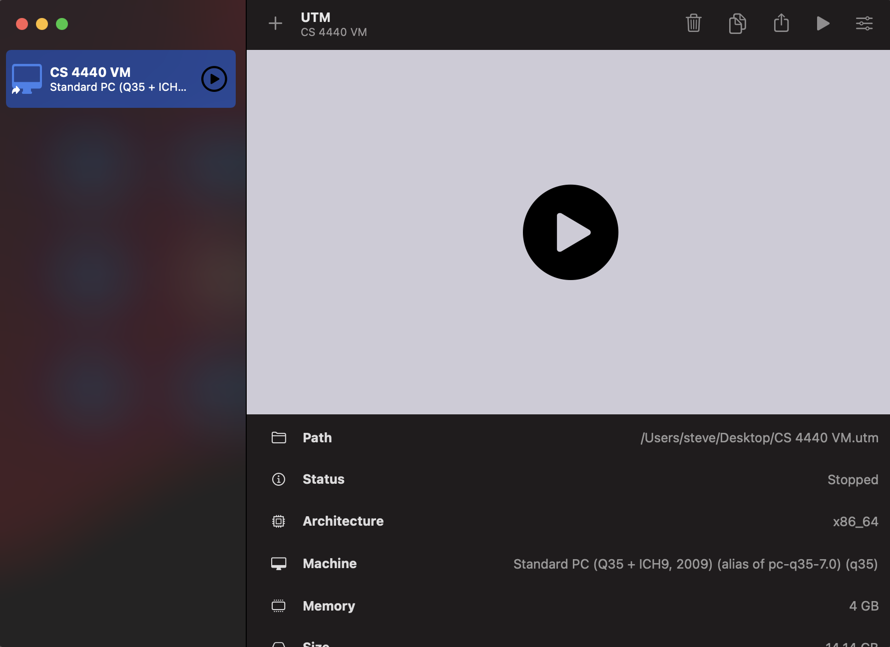
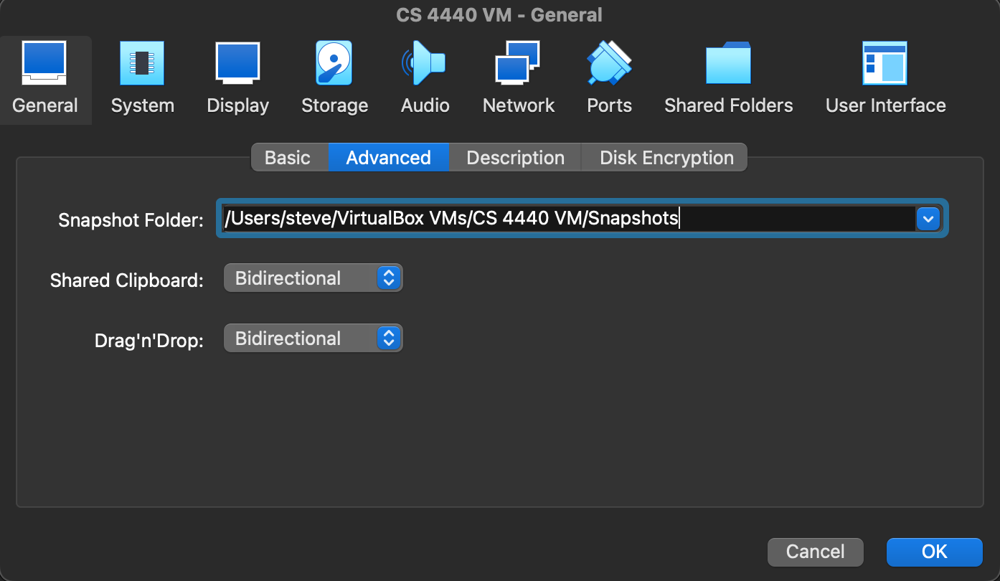
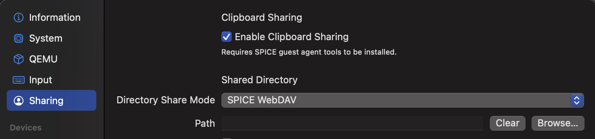
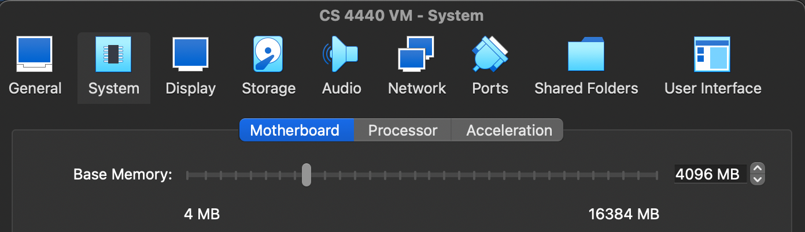
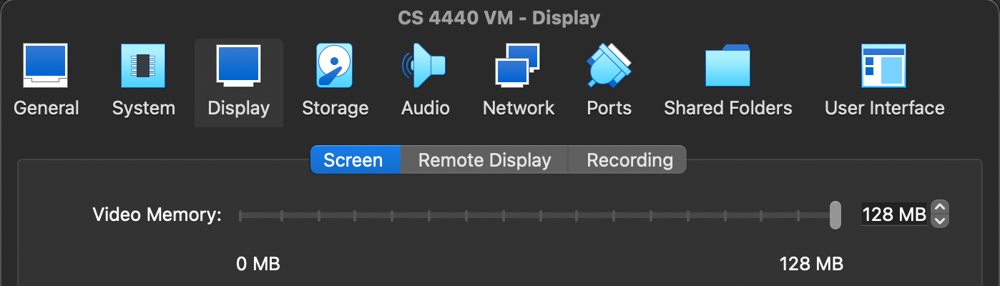
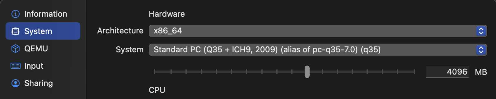

CS 4440 Wiki:
VM Setup & Troubleshooting
To ensure consistency in project environments, we provide a virtual machine (VM) running versions of Linux and Firefox specially configured to never auto-update. Follow the instructions below, depending on which architecture your computer runs. You must work on all project code within the course VM; we will grade your assignments in the same VM environment.
It is your responsibility to set aside enough disk space on your personal device for all course material, including this VM. Be sure to download your VM files only to your computer's permanent hard disk—NOT cloud storage (e.g., iCloud, OneDrive) as this will corrupt your VM! If disk space is scarce, you may want to consider migrating non-course data to the cloud or to an external storage medium. Except in the most extenuating circumstances, the course staff are not able to provide accommodations due to a lack of space and/or loss of data.
If you run into any problems while reading this guide, the last section offers some troubleshooting tips. We will update this page as we encounter new problems or parts where students are struggling.
VirtualBox: Windows, Linux, and Intel Macs
The following setup is intended for Windows, Linux, and Intel-based Macs. If you are using an Apple Silicon Mac (M1, M2, or newer), please instead jump to the UTM Setup.
Step 0: Download and Install VirtualBox
You will use VirtualBox to run the aforementioned VM. Download the latest version for your host operating system here: https://www.virtualbox.org/wiki/Downloads.
Step 1: Download the VM Appliance
Download the VirtualBox VM appliance from here, and extract it (i.e., launch a terminal or shell and run tar -xf cs4440vm.ova.tar.gz from within the same directory as the file) to your directory of choice. You'll soon see file CS 4440 VM.ova—this is the VM appliance. Do not further extract the .ova file!
Step 2: Import the VM Appliance into VirtualBox
In VirtualBox’s menu, navigate to Tools and then Import Appliance. Select the VM appliance file (CS 4440 VM.ova), and continue to click the Next button until you are no longer prompted. You should not need to modify any settings—just verify that your default settings look like the image below:

The import process may take several minutes. Once complete, click Start to run the VM. Upon successfully booting, you should be greeted with the Linux login screen.
Optional: Save a Snapshot
VirtualBox "snapshots" allow you save the state of a running VM at any point in time. Should you make an irrevocable mistake, you can always revert to this snapshot instead of having to re-setup your VM. Note that any files created or edited in the VM since the last snapshot will be lost.
To take a snapshot, open the VirtualBox VM manager and select Snapshots as shown in the image below. In the panel that appears, click Take to save a snapshot.

UTM: M1/M2 Macs
The following setup is intended for Apple Silicon Macs (M1, M2, or newer).
Step 0 - Download and Install UTM
You'll use UTM to run the VM on an M1/M2 Mac. Download UTM from here: https://mac.getutm.app/ and move the application to your Applications folder (/Applications) for future use.
Step 1: Download the VM Appliance
Download the UTM VM appliance from here, and extract it (i.e., launch a terminal or shell and run tar -xf cs4440vm.utm.tar.gz from within the same directory as the file) to your directory of choice. After extracting, you should see a file CS 4440 VM.utm—this is the VM appliance.
Step 2: Import the VM Appliance into UTM
Double-click the CS 4440 VM.utm file, which should open UTM to a screen similar to the following:

The architecture being x86_64 is expected, even if you are on an ARM-based Mac! This reflects the architecture of the VM, which will always be based on x86.
After clicking Run (any of the three ► buttons in the above screenshot will work), you should see some text flash across the screen. If successful, you will soon be greeted with the Linux login screen.
Logging-in and Using the VM
cs4440 (though we've configured the VM to not require you to enter these on startup). You may need to enter this password when issuing commands as sudo.
On login, you should be greeted with the UofU Desktop. Notice the Terminal and File Browser shortcuts in the bottom task-bar, as well as the Firefox shortcut on your Desktop.

For some Project exercises, everything you need will be pre-installed in your VM. For others, you'll need to download some files from the CS 4440 web server; you can use Firefox, or wget in your Terminal.
Spend some time getting familiar with your new VM—you'll be using it all semester!
[Optional] Setting up VSCode Remote SSH with VirtualBox
Using VSCode's Remote SSH feature, you can work on your VirtualBox VM directly from your local machine's VSCode editor. This allows you to edit files and run terminal commands on the VM without leaving your local VSCode environment. Follow these steps to set up the connection:
Virtual Machine:
- Before starting your VM, open the VM software (VirtualBox or UTM) and select your working VM.
For Windows (VirtualBox):
- Click Settings → Network → Ensure 'Attached to: "NAT"' → Advanced → Port Forwarding.
- Click the "+" icon to add a new rule and configure:
- Name: "SSH"
- Protocol: "TCP"
- Host Port:
2222(or any unused port) - Guest Port:
22
- Click 'OK' when done.
For Mac (UTM):
- Click the settings button (sliders icon) → Network → Change the dropbox to 'Emulated VLAN'.
- Leaving the rest of the settings the same, select the newly created Port Forwarding on the sidebar.
- Click the 'New' button to add a new rule and configure:
- Protocol: "TCP"
- Host Port (bottom box):
2222(or any unused port) - Guest Port (2nd from the top):
22
- Click 'OK' when done.
- Start your VM and open a terminal.
- To install the SSH server, we need to temporarily update the package lists. Run these commands in order:
- First, backup the current sources:
sudo cp /etc/apt/sources.list /etc/apt/sources.list.snapshot - Update package sources (copy and paste the entire command):
sudo cp /etc/apt/sources.list /etc/apt/sources.list.temp && \ echo "deb http://archive.ubuntu.com/ubuntu focal main restricted universe multiverse deb http://archive.ubuntu.com/ubuntu focal-updates main restricted universe multiverse deb http://archive.ubuntu.com/ubuntu focal-security main restricted universe multiverse" | sudo tee /etc/apt/sources.list - Install OpenSSH server:
sudo apt update && sudo apt install -y openssh-server - Restore original sources:
sudo mv /etc/apt/sources.list.snapshot /etc/apt/sources.list && sudo apt update
- First, backup the current sources:
- Verify the SSH service status with:
sudo systemctl status ssh. - If the service is not running, start it with:
sudo systemctl start ssh.
Local Machine:
- Open VSCode and click the Extensions icon in the sidebar (or press
Ctrl+Shift+X). - Search for and install the "Remote Development" extension package by Microsoft.
- Open the command palette (press
Ctrl+Shift+P) and enterRemote-SSH: Open SSH Configuration File. - Select the first file option, typically
C:\Users\[YourUsername]\.ssh\config. - Paste the following configuration:
Host *REPLACE WITH PREFERRED NAME*
HostName localhost
Port 2222
User cs4440 - Click the Remote Explorer icon in the sidebar (monitor icon) and select 'Remote (Tunnels/SSH)' from the dropdown up top.
- Look for your newly added SSH host name and click the "Connect to Host" button (arrow icon) to open a new VSCode window connected to your VM.
- You may be prompted to enter the system type (linux) and your SSH password (cs4440).
- You are now connected to your VM! You can connect a folder from the files tab, and open a terminal to start executing commands on your VM.
Troubleshooting
See the below suggestions for troubleshooting common VM issues. If you are encountering a different issue (and none of our tips have helped you solve it), please let us know on Piazza!
Downloading the VM Appliance
While we have tried to create the smallest-possible VMs, they are inevitably a few gigabytes in size. We recommend that you download the VMs on a fast internet connection (e.g., UofU campus WiFi).
Depending on your web browser’s configuration such as extensions or add-ons geared towards privacy, the VM Appliance download from may fail in the middle. If this happens repeatedly, we recommend downloading from incognito mode with all extensions disabled, or downloading another web browser.
Display Resolution is Small
Generally, rebooting from within the VM (just run sudo reboot in your VM's Terminal) will resize your display to a larger resolution. In some cases, you may need to adjust your VirtualBox or UTM settings.
Copying and Pasting To/From Host
To help make your workflow easier, both VirtualBox and UTM support copying and pasting from host to VM (and vice-versa). To enable this, see the following steps.
VirtualBox: with your VM off, click on Settings and then then General. Under the Advanced tab, make sure that Shared Clipboard is set to Bidirectional.

UTM: with your VM off, select your VM and click on the top-right Edit selected VM button (). Under Sharing, toggle Enable Clipboard Sharing.

Crashes or Black Screens on VM Startup
Often, non-bootable VMs are stem from corrupted downloads or corrupted VM appliances. This can be caused by incomplete/partial downloads of the VM tarball; your system's hard disk having insufficient space for the VM tarball and/or the extracted VM appliance; or from corruption caused by downloading/extracting to a cloud-synced folder (e.g., iCloud, OneDrive, etc.). If you're seeing such errors, be sure to (1) free enough space on your hard drive, before (2) re-downloading, re-extracting, and re-loading the VM appliance to a non-cloud-synced directory. Be sure to delete any non-working VM appliances from before, as these also take up unnecessary disk space!
In other cases, your VM may be using too much or too little memory depending on your host system's resources. This often causes VirtualBox and UTM to either crash on VM startup, or indefinitely hang on a black screen. We recommend that you try adjusting your VM's settings to either increase or decrease the amount of RAM (memory) and/or VRAM (video memory) used. This may require some trial and error!
VirtualBox: first make sure that your VM is turned off, and then click on the Settings button. Select the System tab and adjust your RAM (Base Memory) accordingly:

You can also adjust the VRAM (Video Memory) within the Display tab:

UTM: first turn off your VM, and then select your VM and click on the top-right Edit selected VM button (). From there, click the System tab and adjust your RAM accordingly:

Firefox Crashes
We've seen RAM / VRAM also affect the VM's Firefox web browser, causing it to unexpectedly crash. We recommend trying to adjust your RAM / VRAM levels using the above steps.
VirtualBox: CPU Virtualization Setup
VirtualBox requires an x86(-64) processor with hardware-assisted virtualization; such feature is called VT-x on Intel processors and AMD-V on AMD processors. If you have a Mac, virtualization should be enabled by default in firmware. If you have a PC, chances are the feature will be enabled from the factory, yet this is not always the case.
In order to enable virtualization, you will need to enter the setup menu of your BIOS or UEFI on your PC. The key combination to press immediately after startup differs by PC manufacturer, but oftentimes it is one of F2, Delete, F10, F12, or Esc. Consult your manufacturer’s documentation if you are unsure. The location of the setting will also differ by manufacturer. However, the name will almost always include "virtualization" or "virtualization technology".
VirtualBox: Error while Importing
If you have a previous installation of VirtualBox 6, you may encounter an error saying Invalid value 'WAS' in AudioAdapter/@driver attribute when importing the VM appliance, causing the import operation to fail. Please update to the latest version of VirtualBox using the download link above.
VirtualBox: Error while Booting Up
We've seen some laptops where, upon booting the VM, VirtualBox throws errors such as VERR_ACCESS_DENIED or VbglR3InitUser. We recommend just rebooting your computer (not the VM—your entire laptop) and trying again. Alternatively, we've seen some successes where users just clicked-through those errors to get to the working VM. We also recommend trying to run VirtualBox with Administrator permissions, or increasing/decreasing the VM's memory (refer to Crashes or Black Screen on VM Startup for instructions on adjusting your VM's RAM limit).
VirtualBox: Missing Dependencies
VirtualBox may prompt you with a message about missing Python Core / win32api dependencies. You can ignore this as these features are not necessary for the course. See this thread on the VBox forums for more info.
VirtualBox: MacOS Hosts
You might have trouble running the VM with VirtualBox on an Intel Mac if you didn't choose the correct security settings when installing VirtualBox. Take a look at the suggested answer here.
VirtualBox: Windows 11 Hosts
On some Windows 11 hosts, VirtualBox may fail to install, asking for Microsoft Visual C++ 2019 to be installed beforehand. You can download this here.